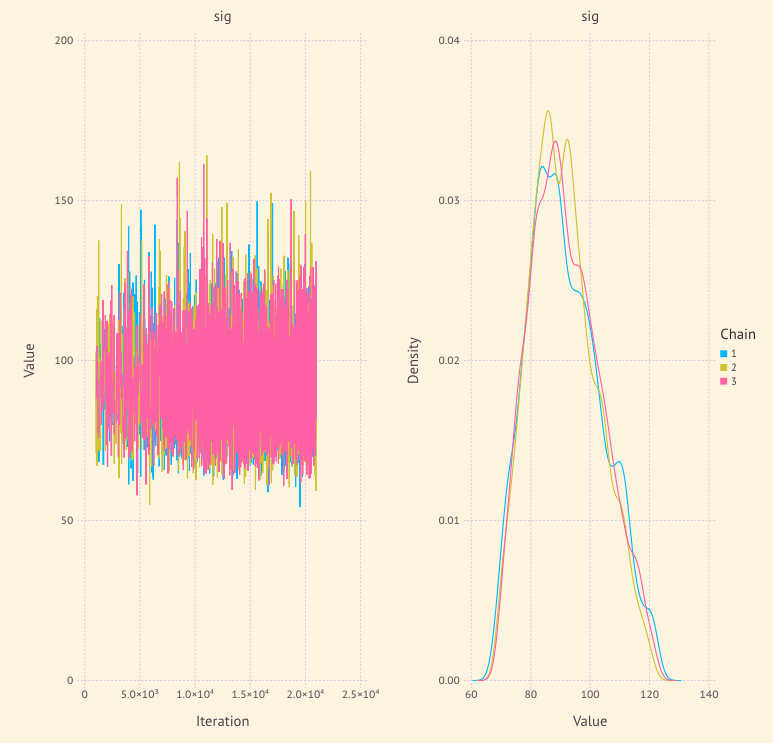

PyMC3にはTimeseriesとして GaussianRandomWalk などの時系列モデルが実装されている。
だが残念なことに私が使っているMamba.jl(0.12.1)には時系列モデルがない。下のように cumsum を使ってモデルを作成することは可能ではあるが、面倒だし次元が大きくなってきたりモデルが複雑になってくると遅い。
local_level_model = Model(
obs = Stochastic(1,
(N, T, sigma_I) -> MvNormal(T, sigma_I),
false
),
T = Logical(1,
(T_0, disturbance) -> T_0 .+ vcat([0], cumsum(disturbance)),
),
disturbance = Stochastic(1,
(N, sigma_T) -> MvNormal(N - 1, sigma_T),
false
),
sigma_I = Stochastic(() -> InverseGamma()),
sigma_T = Stochastic(() -> InverseGamma()),
T_0 = Stochastic(T_init -> Normal(T_init, 100)),
)
だからと言ってそのためにわざわざPython+PyMC3に移るのも癪だし、練習を兼ねてJulia+Mamba用の確率分布を試しに作ってみようと思ったのが今回の内容である。幸いなことに、Mamba.jlには作り方のガイドラインが書いてあるので、多変量分布用のガイドラインを参考にして作ることができた。
今回は、GaussianRandomWalk は、初期値の分布 \( D \) とドリフト \( \mu_i \) , 分散 \( \sigma \) とした時に、
\( \begin{aligned} Y_0 &= D, \\ Y_{i+1} &= Y_i + \mu_i + \epsilon_i, \\ \epsilon_i &\sim \text{Normal}(0, \sigma) \end{aligned} \)
というモデルに従っているとする。
Mamba.jlでUser-Definedの多変量分布を使うためには, Distributionの全ての関数を定義する必要はなく、
次元 length, 分布のサポート insupport, 確率密度関数の対数 _logpdf だけ定義すればサンプリングができる。
using Distributed
@everywhere extensions = quote
using Distributions
import Distributions: length, insupport, _logpdf
mutable struct GaussianRandomWalk <: ContinuousMultivariateDistribution
mu::Vector{Float64}
sig::Float64
init::ContinuousUnivariateDistribution
end
length(d::GaussianRandomWalk) = length(d.mu) + 1
function insupport(d::GaussianRandomWalk, x::AbstractVector{T}) where {T<:Real}
length(d) == length(x) && all(isfinite.(x))
end
function _logpdf(d::GaussianRandomWalk, x::AbstractVector{T}) where {T<:Real}
randomwalk_like = logpdf.(Normal.(d.mu + x[1:end-1], d.sig), x[2:end])
logpdf(d.init, x[1]) + sum(randomwalk_like)
end
end
length を定義するときは、ドリフト項の数が次元より一つ小さくなることに注意。
\( D \) の確率密度関数を \( f_D \), \( \text{Normal}(\mu, \sigma) \)の確率密度関数を \( f_{\mu, \sigma} \) とすると、 多変量分布 \( (Y_0, …, Y_n) \) の確率密度関数 \( f \) が
\( f(x_0, \ldots, x_n) = f_D(x_0)\cdot f_{x_0+\mu_0, \sigma}(x_1)\cdots f_{x_{n-1}+\mu_{n-1}, \sigma}(x_n) \)
となるので _logpdf は上のような定義になっている。(本当はここの理由もちゃんと詰めて書いた方が良い気がする)
quote の意味が最初わからなかったが、これで quote から end までのコード全体をオブジェクトとして extensions に代入して、下のように空のモジュールを作成して、
module Testing end
下を実行すると
Core.eval(Testing, extensions)
Testing モジュール内で quote した extension の内容が読み込まれるということのようだ。
https://docs.julialang.org/en/v1/manual/metaprogramming/index.html#Metaprogramming-1
新しく作成した分布を用いてMambaのモデルを作成し、サンプリングをしてみよう。
簡単のためにドリフトは無視して、分散 \( \sqrt{100} \) の正規分布の列からなる100次元の GaussianRandomWalk のサンプルを作成し、モデルを作成して分散を推定してみる。
@everywhere using Mamba
@everywhere eval(extensions)
model = Model(
y = Stochastic(1,
sig -> GaussianRandomWalk(zeros(99), sqrt(sig), Normal(0, sqrt(sig))),
false
),
sig = Stochastic(
() -> InverseGamma(0.001, 0.001)
),
)
scheme = [AMWG(:sig, 10.0)]
setsamplers!(model, scheme)
data = Dict(
:y => cumsum(rand(MvNormal(100, sqrt(100))))
)
inits = [
Dict(
:y => data[:y],
:sig => 1,
)
for _ in 1:3
]
sim = mcmc(model, data, inits, 21000, burnin=1000, thin=4, chains=3)
describe(sim)
println("Actual variance: ", var(diff(data[:y])))
p = Mamba.plot(sim, legend = true)
Mamba.draw(p, nrow = 1, ncol = 2)
結果->
MCMC Simulation of 21000 Iterations x 3 Chains...
Chain 1: 0% [1:17:22 of 1:17:24 remaining]
Chain 1: 10% [0:00:24 of 0:00:27 remaining]
Chain 1: 20% [0:00:11 of 0:00:14 remaining]
Chain 1: 30% [0:00:07 of 0:00:09 remaining]
Chain 1: 40% [0:00:04 of 0:00:07 remaining]
Chain 1: 50% [0:00:03 of 0:00:06 remaining]
Chain 1: 60% [0:00:02 of 0:00:05 remaining]
Chain 1: 70% [0:00:01 of 0:00:05 remaining]
Chain 1: 80% [0:00:01 of 0:00:04 remaining]
Chain 1: 90% [0:00:00 of 0:00:04 remaining]
Chain 1: 100% [0:00:00 of 0:00:04 remaining]
Chain 2: 0% [0:00:01 of 0:00:01 remaining]
Chain 2: 10% [0:00:01 of 0:00:01 remaining]
Chain 2: 20% [0:00:01 of 0:00:01 remaining]
Chain 2: 30% [0:00:01 of 0:00:01 remaining]
Chain 2: 40% [0:00:01 of 0:00:01 remaining]
Chain 2: 50% [0:00:00 of 0:00:01 remaining]
Chain 2: 60% [0:00:00 of 0:00:01 remaining]
Chain 2: 70% [0:00:00 of 0:00:01 remaining]
Chain 2: 80% [0:00:00 of 0:00:01 remaining]
Chain 2: 90% [0:00:00 of 0:00:01 remaining]
Chain 2: 100% [0:00:00 of 0:00:01 remaining]
Chain 3: 0% [0:00:01 of 0:00:01 remaining]
Chain 3: 10% [0:00:01 of 0:00:01 remaining]
Chain 3: 20% [0:00:01 of 0:00:01 remaining]
Chain 3: 30% [0:00:01 of 0:00:01 remaining]
Chain 3: 40% [0:00:01 of 0:00:01 remaining]
Chain 3: 50% [0:00:01 of 0:00:01 remaining]
Chain 3: 60% [0:00:00 of 0:00:01 remaining]
Chain 3: 70% [0:00:00 of 0:00:01 remaining]
Chain 3: 80% [0:00:00 of 0:00:01 remaining]
Chain 3: 90% [0:00:00 of 0:00:01 remaining]
Chain 3: 100% [0:00:00 of 0:00:01 remaining]
Iterations = 1004:21000
Thinning interval = 4
Chains = 1,2,3
Samples per chain = 5000
Empirical Posterior Estimates:
Mean SD Naive SE MCSE ESS
sig 91.87928 13.629016 0.111280453 0.21081987 4179.323
Quantiles:
2.5% 25.0% 50.0% 75.0% 97.5%
sig 69.039156 82.188388 90.31312 100.2171 122.073783
Actual variance: 92.0192593899444

標本分散が92だから正しく推定できているのではないだろうか。
次は、確認を兼ねて、作った GaussianRandomWalk を使って時系列モデルの構築に挑戦したい。
全部のコード: